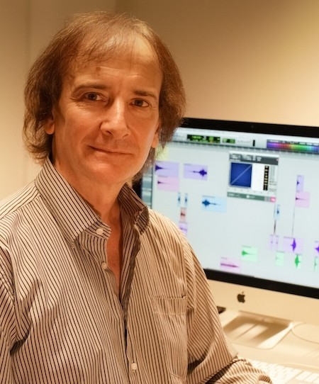

Institute for Computer Music and Sound Technology / (ICST) Zurich University of the Arts
#11 ascolta Akusmatische Hörstunde

Mario Mary, portrait
Konzert
- 11.06.2024, 18:00
- Toni-Areal,
- Kompositionsstudio 3.D02, Ebene 3,
- Pfingstweidstrasse 96, Zürich
Eintritt frei
Programm:
-
2015 Polyphonic philosophy pièce électroacoustique en 8 pistes. [ 10’ 43’’]
Commande de l’ICST de Zurich, Suisse. Création à l’Université de Zurich en novembre 2015 Continuing the aesthetic exploration about “electroacoustic orchestration” and “polyphony of space” of the previous works “Signes émergents” and “2261”, the first section of this composition develops in the horizontal plane a concept that could be called “melody of sound objects”. Here, polyphony and counterpoint of the musical discourse is interwoven through with small sound objects, creating polyphony and counterpoint taking advantage of the possibilities offered by the multitracks space with 8 tracks around public.
-
2018 Le sophistiqué son du Dasein pièce électroacoustique en 8 pistes. [ 17’ ]
Commande de l’INA-GRM / Réalisée au studio du compositeur. Création á la MPAA de Saint-Germain - Paris - France en octobre 2018 Second Prix Klang! 2019(France) Mention d’honneur CIME 2019 (France) This music is concretized through personal techniques as well as reflective work to express electroacoustic art and today’s world. In this piece I have put special interest in the quality of the sound materials, essential essence of electroacoustic art. And I have also given special importance to the musical discourse that makes us go through the different sections of the piece in a fluid way.
-
2022 Towards the Morondanga Galaxy pièce électroacoustique en 8 pistes. [ 10’ ]
Réalisée au studio du compositeur. This piece is inspired by the idea of a trip to an imaginary galaxy. The electroacoustic sounds suggest sounds inside the spaceship and illustrate the various events she goes through on her journey. The cosmic space and the space of the electroacoustic composition merge in the musical discourse.
-
2023 Pedro en su laberinto pièce électroacoustique en 8 pistes. [ 10’ 10’’]
Création le 21 août 2023 au FIME - ArtHaus Center - Buenos Aires - Argentine. Réalisée au studio du compositeur. Distinction CIME 2023 (Grèce) This composition is a proposal with a high density of sound materials and few breaths. The work displays an indefatigable energy through an articulate and vital polyphonic discourse. The multiple trajectories and sound planes generate a rich and changing acoustic space around the listener. All this complexity could be linked to life itself, in which, without realizing it, we progressively create our own labyrinths and the terrains where our deepest joys and conflicts develop.
Mario MARY
An Argentine composer born April 25, 1961 in Buenos Aires.

After gaining a diploma in composition at the University of La Plata in Argentina, Mario Mary continued his training at the GRM, the Paris Conservatory and Ircam. He obtained a doctorate in the aesthetics, science and technology of the arts, at the University of Paris VIII, where he taught computer-assisted composition (1996-2010).
A teacher of electro-acoustic composition at the Académie de Musique Prince Rainier III in Monaco, co-founder and artistic director of Monaco/Electroacoustique (international electro-acoustic music meetings), this teacher-researcher also lectures in Europe and South America.
Mario Mary composes mainly electro-acoustic works (Fuite en avant, premiered at Festival Synthèse, 2005 ; 2261, premiered at Radio France, 2009 ; Le sophistiqué son du Dasein, premiered at MPAA, 2018) but also chamber works with or without electro-acoustics (La orilla secreta for cello, piano, percussion and electro-acoustic sounds, premiered at Rencontres internationales de musique électroacoustique de Monaco, 2011 ; No sé, musical theater for mixed voices, premiered at Buenos Aires, 2014). He has also made experimental videos that relate to his works (Un souffle de vie, premiered at Radio France in 2006). Since the 1990s his work has been directed towards the concept of spatial polyphony (Signes émergents, an electro-acoustic piece commissioned by the GRM, 2003) and a technique of electro-acoustic orchestration (Double concerto for clarinet, violin and electro-acoustics, premiered by Ensemble orchestral Contemporain during Festival Manca, 2012).
Quelle: http://www.cdmc.asso.fr/en/ressources/compositeurs/biographies/mary-mario-marcelo-1961
©2025 ICST